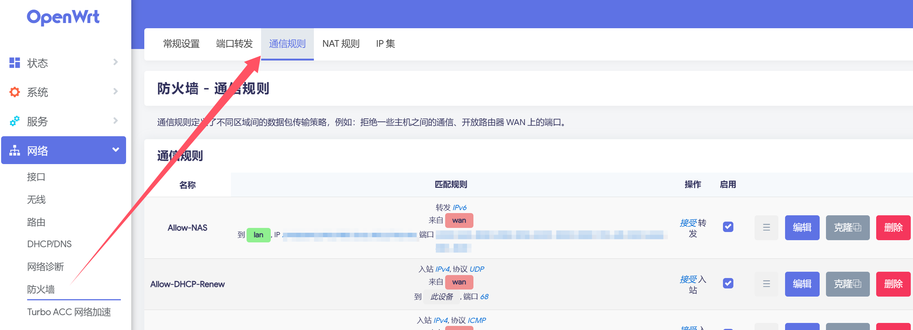
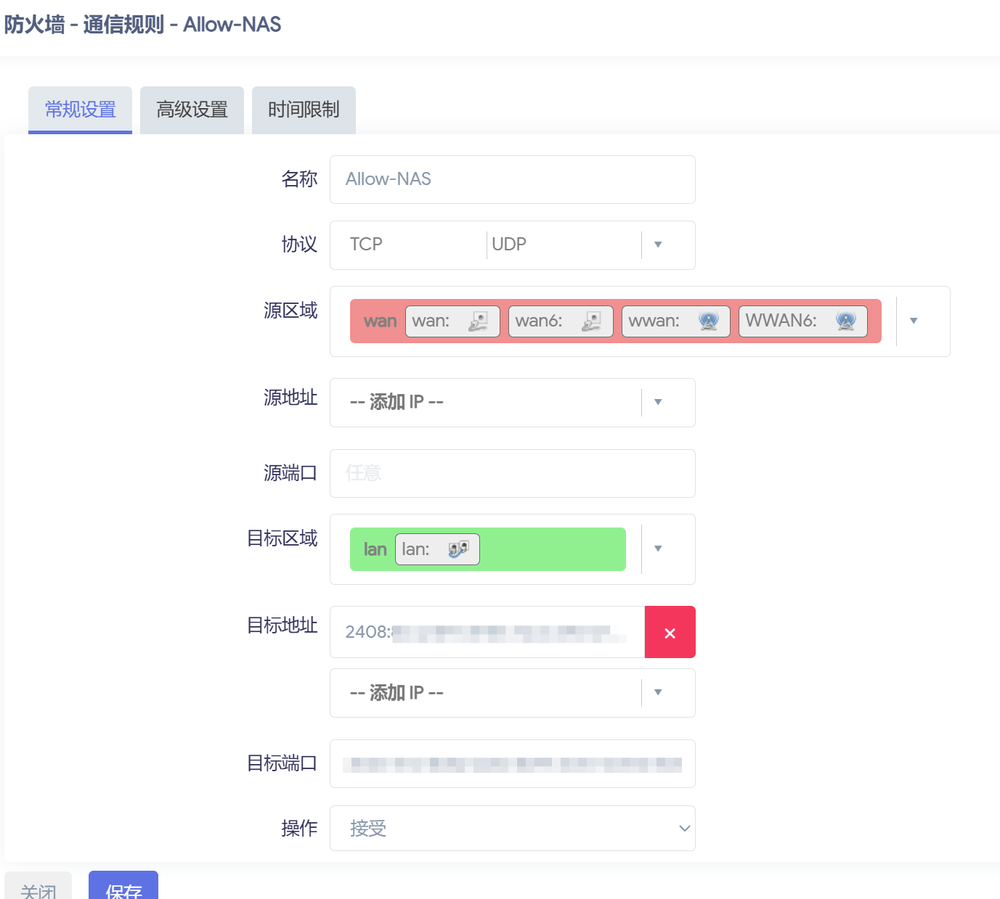
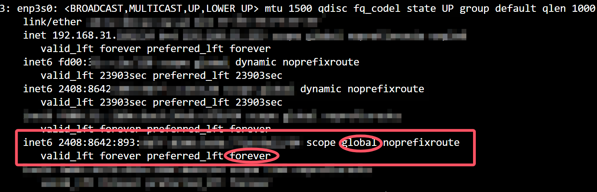

硬路由（5）—— 校园网 & 远程访问（IPv6）
概述
经过上述配置后，我们已经能够在 IPv4 环境下实现组网，并通过 Tailscale 远程加入了内网。
但我们可能会遇到很多问题：
- Tailscale 走国外中继服务器 / 自建 Derp 性能不足，导致连接不稳定
- NAT 对路由器性能开销较大
- 校内某些网站（如 NexusHD、ZJU Mirror 等）支持 IPv6 访问
这时，我们就需要配置 IPv6 环境。
IPv6 是 Internet 协议的最新版本，旨在替换 IPv4 地址。IPv6 地址使用以冒号分隔的十六进制数字。它分为八个 16 位块，构成一个 128 位地址方案。与 IPv4 的 NAT 方案相比，IPv6 可以给主机分配全球单播地址来实现对主机的远程访问。
在配置之前，让我们简单地了解一下关于配置校园网 IPv6 的部分所需知识。
全球单播地址
全局单播地址是带有全局单播前缀的IPv6地址，其作用类似于IPv4中的公网地址。
全球单播地址由全球路由前缀、子网ID和接口标识组成，其格式如下所示：
全球单播地址的范围为2xxx::/3，其中前 3 位固定，第 4 位至第 48 位为公共拓扑（一般由运营商分配），第 49 位至第 64 位为站点拓扑（路由器可以利用这 16 位来分配子网）。后 64 位为主机部分，与 IPv4 类似。因此，当被分配 /128 位地址时，意味着该网络中仅有一个主机，无法继续向下分配子网。
IPv6 地址分配
以下部分主要来源于这篇文章。
NAT66
NAT66（Network Address Translation for IPv6 to IPv6）是一种用于 IPv6 网络的地址转换技术。NAT66 的作用是通过将内部设备的 IPv6 地址映射到另一组 IPv6 地址来实现地址转换，使得内部设备可以访问外部网络，同时保护内部网络的真实 IPv6 地址不被外部直接暴露。
但 NAT66 与 IPv6 设计初衷相背。在 IPv6 的构想中，网络应当是平面化的，所有设备之间都可以实现端到端连接，而 NAT 破坏了这种平面结构。虽然 NAT 有着能够保护设备安全性，维护私有网络安全的附加作用，但这部分功能本应由防火墙和代理功能完成。NAT 本身只是基于 IPv4 时代地址分配不足问题而提出的临时性解决方案，却也因此使得 IPv4 顽固地扎根在互联网中，推迟了 IPv6 时代的到来。
SLAAC
SLAAC（Stateless Address Autoconfiguration，无状态地址自动配置）是一种可以在没有 DHCPv6 服务器的情况下获取 IPv6 地址的方法。
主要过程如下：
- 在客户端会向多播地址
ff02::2广播路由器请求（RS，Router Solicitation）信息； - 路由节点在收到 RS 后即会单播回复路由器通告（RA，Router Advertisement）信息来告知客户端路由前缀（如
2001:da8:abc:def::/64）； - 客户端收到 RA 获取其所在子网的前缀，并配合重复地址检测（DAD，Duplicate Address Detection） 协议自动生成该前缀下唯一的全局路由地址。
多数高校中配置的 IPv6 环境会通过上述过程让客户端获取一个 /64 的地址（如2001:da8:abc:def:aa:bb:cc:dd/64）；部分会在其中第 2 步之前对客户端的 MAC 地址进行鉴权，仅对已通过认证的 MAC 地址做 RA 响应。
DHCPv6 PD
DHCPv6 PD（Prefix Delegation，前缀代理）是一种 DHCPv6 的扩展，它通常与 SLAAC 和无状态 DHCPv6 结合使用，以提供更全面的 IPv6 地址配置和前缀分配。
DHCPv6 PD 扩展了 DHCPv6 协议，允许 DHCPv6 服务器分配 IPv6 前缀给路由器，以便路由器可以通过 SLAAC 或其他方式为网络内的设备生成 IPv6 地址。举个例子，PD 服务器可以将2022:da8::/60前缀通过某个 IPv6 接口下发给 PD 客户端，同时一般会在 PD 客户端的上联设备上生成相应的路由。PD 客户端收到该前缀后，就可以在本地 IPv6 接口上动态使用该前缀的 /64 子网地址。
工作流程通常如下：
- 路由器向 ISP 的 DHCPv6 服务器请求 IPv6 前缀（PD 请求）。
- DHCPv6 服务器响应 PD 请求，将一个或多个 IPv6 前缀分配给路由器。
- 路由器使用分配的前缀信息，通过 SLAAC 或其他方式为网络内的设备生成 IPv6 地址。
NDP
NDP 是 IPv6 中类似 ARP 的协议，用于网络层和链路层的节点发现以及地址翻译。其主要过程与上述 SLAAC 类似，客户端会将目的地的信息放在邻居请求（NS，Neighbor Solicitation） 消息中进行广播或单播，而被查询的地址如果在线则会发送邻居通告（NS，Neighbor Advertisement） 消息告知客户端其链路地址。
odhcpd 的中继模式（Relay）
针对单设备仅能获取 /64 非 PD 地址的网络环境，OpenWrt 默认包含的 odhcpd 包提供了中继模式来让内网的客户端能够正确获取 IPv6 地址以及与外界通信。以下内容不包含对 DHCPv6 协议的中继。
中继行为
中继模式中每个接口有 Master / Slave 之分。 对于 RA 中继，其会影响 RS / RA 消息的转发方向：
- 从 Slave 接口收到 RS 消息，odhcpd 会修改源 MAC，将其从 Master 接口转发出去；
- 从 Master 接口收到 RA 消息，odhcpd 会修改源 MAC 地址，将其从 Slave 接口转发出去；
- 从 Slave 接口收到的 RA 消息以及从 Master 接口收到的 RS 消息会被忽略。
对于 NDP 中继则不区分 Master / Slave 身份，以下仅以 Master，Slave 两个接口做举例：
- 从 Master 接口收到 NS 消息，odhcpd 会发送 ICMP Echo 消息来让内核在 Slave 接口触发目的地址的 NDP 过程，若成功在 Slave 接口所在的链路发现了目的地址，则在 Master 接口回复相应的 NA 消息，反之亦然；
- 在上述步骤中成功在 Master / Slave 链路被发现的节点地址会被加入路由表，以方便后续通信。
更新路由表项的任务交给 NDP 中继的原因是：（见 SLAAC 部分）路由器并不能知道所有的节点地址信息，自然也无法进行正确的路由。
从上述中继模式的行为可以知道，对于绝大多数情况，WAN / LAN 口即分别为 Master / Slave 接口。
工作条件
仔细分析中继模式的行为我们可以发现，对于 LAN 侧的客户端来说，几乎都可以通过中继模式的 RA 通过 SLAAC 协议获取 IPv6 地址，然而要想通过这个地址与外网正常通信，则需要让 NDP 中继建立起正确的指向 LAN 接口的路由表项。下面以 LAN 侧客户端 A 主动 ping Google 为例：
- LAN 侧客户端 A（
2001:da8:abc:def::A/64）发起了对全局路由地址（如ipv6.google.com）的 Echo-request 请求，该 IPv6 分组会被正常路由到 Google 的服务器； - 服务器 Echo-reply 的分组到达 WAN 口的上游，此时上游会在各个节点端口广播目标是 A 地址的 NS 消息，当路由器的 WAN 收到该 NS 时，会按照前文中 NDP 中继的行为进行中继；
- odhcpd 成功让内核在 LAN 侧发现了 A，从而在 WAN 侧回复了 NA 请求，并在路由表添加了 A 地址在 LAN 侧的表项；
- WAN 口的上游收到了来自 odhcpd 的 NA 消息从而更新了 A 节点的邻居信息，并将来自服务器的 Echo-reply 分组发送到 WAN 口；
- WAN 口根据步骤 3 中建立的路由表项将发往 A 的分组路由到 LAN 侧并交付。
我们可以看到，如果需要让中继模式正常工作打通内外网，上述 5 个步骤必须依次进行且缺一不可。其中步骤 1，3，5 都是在发生在路由器端且可控制的，而步骤 2， 4 却是路由器 WAN 口上游节点的行为，不为用户所控制。
中继模式的局限性
由于如今大多数操作系统都会默认开启 IPv6 隐私扩展，LAN 侧节点的地址会定期改变，而每次新的地址发起连接都会重复上文中继模式工作条件的 5 个步骤，这导致即使中继模式正常工作也会有非预期的延时。此外上游节点的不可控因素也会导致中继模式不正常工作。
在中继模式的工作条件中，步骤 2 是比较容易出问题的环节。如上游节点的邻居信息是在路由器接入链路认证后静态绑定，跳过了邻居发现过程就直接把 IPv6 分组递交到了 WAN 口，此时 odhcpd 的 NDP 中继无法学习到正确的路由表也就一直无法让目的地是 LAN 的分组进入 LAN 区域。
校园网环境
有线网
从 2024 年 7 月开始，浙江大学有线网放弃了L2TP连接方式，采用 Web 认证方式，并且继续提供 IPv6 地址。不过，由于提供的 IPv6 地址是 /128 位的，这导致该地址无法下发给其他设备。/128 位的 IPv6 地址只能通过配置 NAT66 的方式来完成下发。
在校园网 & 认证方案中提到过，玉泉部分宿舍有线网仅限速百兆，这可能与交换机的设置有关。但根据测试，有线网对 IPv6 暂时没有限速。
无线网
浙江大学校园网的无线网目前提供两种连接，一种是 ZJUWLAN，采用 Web 认证方式，不提供 IPv6 地址；另一种是 ZJUWLAN-Secure，采用 WPA2-EAP 认证方式，提供 /64 位的 IPv6 地址。因此我们可以采用中继的方式为下级设备直接分配 IPv6 地址。不幸的是，浙江大学的无线中继方式无法直接通过 odhcpd 分配地址，需要采用特别的解决方案。
解决方案
以下部分主要来源于这篇文章，部分配置有改动。
有线网 + NAT66
WAN 口获取 IPv6 地址
大多数路由器默认有一个 DHCP 接口和 DHCPv6 接口，此时 DHCP 接口获取到了 IPv4 地址，但 DHCPv6 接口并未获取 IPv6 地址。
在 LuCi 界面的 DHCPv6 接口设置中，“请求指定长度的 IPv6 前缀”选择“禁用”，再点击“保存&应用”，此时应该可以让 DHCPv6 接口获取到 IPv6 地址，而且是一个 /128 位的 IPv6 地址。
方法一：Terminal 配置（版本 ≥ 22.03 且启用了 nftables 防火墙）
在上游区域启用 IPv6 伪装，打开路由器终端，运行：
1 | uci set firewall.@zone[1].masq6="1" |
在上游接口上禁用 IPv6 源过滤：
1 | uci set network.wan6.sourcefilter="0" |
编辑 LAN 接口选项：
IPv6设置：RA服务选择“服务器模式”，DHCPv6服务选择“服务器模式”，禁用NDP代理。IPv6 RA设置，默认路由器选择“强制的”。
在完成以上步骤后，下游设备应该能够通过IPv6上网了，尽管在各个设备相关的网络接口并不会显示公网IPv6地址。
方法二：NAT配置助手（版本 < 22.03 或使用 iptables 防火墙）
在软件包里更新软件列表，搜索luci-app-nat6-helper，安装后刷新管理页面，在“服务”里多出一个软件叫“NAT6配置助手”。安装该软件会自动安装相关依赖，如果此事没有发生则请手动安装。点击“启用”和“执行IPv6初始化脚本”，该软件会自动配置NAT6，完成后重启路由器使其生效。此时路由器应该就能下发IPv6地址到设备了。
已知问题：微信视频聊天不显示画面
遗憾的是，对于中国用户来说，目前 OpenWrt 路由器的 NAT66 的配置似乎会导致一个普遍性的问题，那就是微信视频通话时不显示对方的画面，并且会出现在 PC 端和手机端上。其他通讯软件不会有此类问题，包括同为腾讯开发的 QQ。目前暂时没有找到解决方案。
无线中继 + 伪装 PD
创建 WWAN6 接口
我们在校园网 & 认证方案当中讲述了使用无线 Client 方式连接 ZJUWLAN-Secure 的办法。接下来，我们需要创建 WWAN6 接口：
注意分配与 WAN 和 WAN6 相同的防火墙区域。创建好 WWAN6 口后，该接口应该能直接获取到 /64 的 IPv6 地址。如果常规的中继模式可以让下游设备获取到IPv6地址，那么配置到这里就完成了。
配置 WAN / LAN 中继模式
常规中继模式的配置方式：
WAN6 / WWAN6 + LAN：
- RA 服务：中继模式
- DHCPv6 服务：中继模式
- NDP 代理：中继模式
在 WAN6口 / WWAN6 口的 IPv6 的 DHCP 服务中勾选“指定的主接口”。
实际上，上游节点直接绑定端口和上游直接分配了一个 /64 的 PD 效果是一样的。对于浙江大学这样无法通过直接中继来获取 IPv6 地址的情况，我们也可以伪造成获取了一个 PD 前缀来让netifd进行后续的配置。该方法的优点是 LAN 接口也可以获得一个全局路由地址，并且可以配合 LAN 侧的 DHCPv6 Server 进行更自由的内网配置。
对于这种伪装 PD 下发的策略，我们在 LAN 接口的 DHCPv6 服务需要按照下图进行设置：
- RA 服务：服务器模式
- DHCPv6 服务：服务器模式
- NDP 代理：中继模式
其中 NDP 代理选项一定要设置为中继模式，以下说明原因。
由于上游未分配 PD，伪造后下发的地址在上游看来就像在同一个网段（或 WAN 的子网段），此时上游就会认为路由器 LAN 侧的 IPv6 地址链路可达，向其发送 NS 消息，但路由器 WAN 口在一般情况下不会响应上游的 NS 消息，当 odhcpd 当中的 NDP 代理为中继模式时，其实际上的操作可以概括为向邻居路由表当中写入代理项，这样 WAN 口就可以接管 LAN 侧设备来回应 NS 消息。（实际上就是前文对于 odhcpd 中继行为的介绍）
我们可以实际验证一下：
1 | ip -6 neigh show proxy |
可以看到 NAS 已经被成功代理。
如果 NDP 代理选项设置为禁用，会表现为以下情况：在路由器重启一段时间内（从几分钟到几小时不等）能够正常访问到 NAS，之后无法访问。经过测试发现从路由器到 NAS 之间无法联通。
伪装 PD 下发
接下来对 odhcp6c 的行为进行修改，使其伪装 PD 下发：
打开路由器终端，编辑/etc/odhcp6c.user文件：
1 | vim /etc/odhcp6c.user |
将以下内容粘贴到文件中：
1 |
|
保存后直接重启路由器，过一会儿路由器应该就能下发 IPv6 地址了。
IPv6 防火墙
有时我们配置好后会出现如下情况：NAS 通过 IPv4 访问完全正常，IPv6 也能够 ping 通 NAS，但无法访问任何 NAS 上的服务。
在 IPv4 部分，我们是通过局域网或是 Tailscale（虚拟局域网）来连接到 NAS 的。但在 IPv6，我们是通过直连方式连接到 NAS，因此需要考虑路由器防火墙的问题。
我们可以在网络 - 防火墙 - 通信规则中添加对于 NAS 的 IPv6 支持：

源区域选择 wan，目标区域选择 lan，目标地址选择 NAS 的公网 IPv6 地址（不是本地链路地址）。

在高级设置处，将地址族限制为 IPv6。
远程访问
临时 IPv6 地址与 IPv6 地址
在检查机器的 IPv6 地址时，我们可能会发现三种地址：
- IPv6 地址 / scope global forever：长期的 IPv6 地址
- 临时 IPv6 地址 / scope global dynamic：临时 IPv6 地址
- 本地链接 IPv6 地址 / scope link：类比数据链路层的 MAC 地址，但功能更强大
临时 IPv6 地址是设备生成的针对某些隐私保护方案的 IPv6 地址，它们在设备重新启动时会自动生成。这些地址一般会在较短的时间内过期，以保护用户的隐私。
临时 IPv6 地址是访问外网真正使用的地址。网关防火墙在默认配置下只允许使用临时 IPv6 地址通过。设备可根据隐私保护的需要生成任意数量临时地址。
经过测试，在校园网环境中，我们可以使用长期的 IPv6 地址（机器重启时重新分配）来实现远程访问。
临时 IPv6 地址：受到抨击
有时（尤其是电脑很久没关机时），我们在 Windows Powershell 中输入ipconfig/all，会发现临时 IPv6 地址后跟着（受到抨击）四个字。
事实上，“受到抨击”是微软对 Deprecated 这个词的翻译。
RFC 4862：
Deprecated 地址 - 一种不鼓励但不禁止使用的地址。在新的通信中，不应再将此地址用作源地址（但从已弃用的地址，或向已经弃用的地址发送的数据包，可按预期送达）。如果改用首选的（新的）地址会给特定的上层活动（如现有的 TCP 连接）造成困难，则在通信中可继续使用已废弃的地址作为源地址。
当临时 IPv6 地址为 Deprecated 状态时，Windows 可能更倾向于采用 IPv4 地址，导致 AAAA 记录（域名 → IPv6 地址）解析出现问题。我们可以在 Powershell 中输入：
1 | ipconfig /release6 |
来重新获取 IPv6 地址（重启也可以达到同样的效果）。
如果需要通过 IPv6 稳定访问某个固定域名，我们可以配置 Host 文件（相当于添加本地 DNS 解析记录）。
打开C:\Windows\System32\drivers\etc\hosts文件：
在最下方添加与注释格式一致的 DNS 解析记录即可。
检查是否已获取到 IPv6 地址
请查阅全球单播地址部分。
在 Windows 系统，我们可以在终端输入ipconfig来查看本机是否获取到了 IPv6 地址。
在 Linux 系统，我们可以在终端输入ip a来查看本机是否获取到了 IPv6 地址。

为 IPv6 地址分配域名
和 IPv4 一样，为了代替记忆 128 位的 IPv6 地址，我们可以创建 DNS 解析记录，将某个域名指向对应的 IPv6 地址。不同的是，IPv4 使用的是 DNS A 记录，而 IPv6 使用的是 DNS AAAA 记录。
注意：当路由器重启（或发生其他可能会重新分配 IPv6 地址的情况）后，如果确认机器的 IPv6 地址发生改变，请前往 DNS 服务商处修改对应的解析记录。
DDNS（校网不使用）
DDNS（Dynamic Domain Name System，动态域名系统），它是在DNS的基础上发展起来的一种服务，用来解决动态IP地址的问题。
在家庭或者一些特殊的网络环境中，运营商不会给提供静态IP地址，而是提供动态IP地址，这就意味着你的IP地址可能经常变动，一旦IP改变，那么DNS服务器解析自然就会失败，这样就没办法通过域名访问到服务器了。
在DDNS客户端中配置好域名和IP的映射关系后，它会监控你的IP地址，一旦发现它变化了，就立刻通知DDNS服务器，最后DNS服务器会从DDNS服务器拿到映射关系。
DDNS 在网络上有很多教程，请根据实际情况选择你的 DDNS 服务商并进行配置。由于校园网环境暂时不需要，所以就不在此赘述了。
校网环境下特殊配置
与 IPv6 相性不合的代理
在校网环境下，我们使用的是长期 IPv6 地址，因此开启代理后就无法访问了。
另外，笔者实测在开启代理后，IPv6 访问会出现很多莫名其妙的问题。因此，要使用 IPv6 访问前，还是建议先把自己机器上的代理完全关闭。
中继配置下，在路由器上部署的 ShellCrash 暂时不会影响 IPv6 访问。但如果你出现了问题，可以尝试调整以下设置：
- 将 DNS 运行模式修改为
redir_host - 关闭 IPv6 透明代理
1 | root@:~# crash |
在终端设备上的代理软件由于没有配置相应的规则，会影响 IPv6 代理。
以 Clash for Windows 为例，我们手动添加对应的域名即可。
更换 RDP 端口
由于安全原因，学校对常用端口（如 3389，RDP 服务）的 IPv6 连接进行了限制，ICMP 报文（ping）也会被拦截。
如果要使用远程桌面服务（RDP），我们可以更换被控主机的端口，默认为 3389。
以下内容修改自这篇文章。
修改端口
使用Win + R快捷键调出运行窗口，输入regedit打开系统注册表
修改第一处，进入\HKEY_LOCAL_MACHINE\SYSTEM\CurrentControlSet\Control\Terminal Server\Wds\rdpwd\Tds\tcp，右击 PortNumber，选择修改，基数设置为十进制新的端口按自己需求设置（建议大于 10000）。
修改第二处，进入\HKEY_LOCAL_MACHINE\SYSTEM\CurrentControlSet\Control\Terminal Server\WinStations\RDP-Tcp，同上，设置为同样的端口。
修改防火墙准入规则
进入
\HKEY_LOCAL_MACHINE\SYSTEM\CurrentControlSet\Services\SharedAccess\Defaults\FirewallPolicy\FirewallRules，找到RemoteDesktop-UserMode-In-TCP和RemoteDesktop-UserMode-In-UDP，右键修改，将包含原端口 3389 的数字修改为同样的端口
进入
\HKEY_LOCAL_MACHINE\SYSTEM\CurrentControlSet\Services\SharedAccess\Parameters\FirewallPolicy\FirewallRules，同上，替换旧的端口
重启电脑以使新的端口生效。（重启后记得查看新的 IPv6 地址并更改解析记录）
下一章节：Tricks & 组网图景